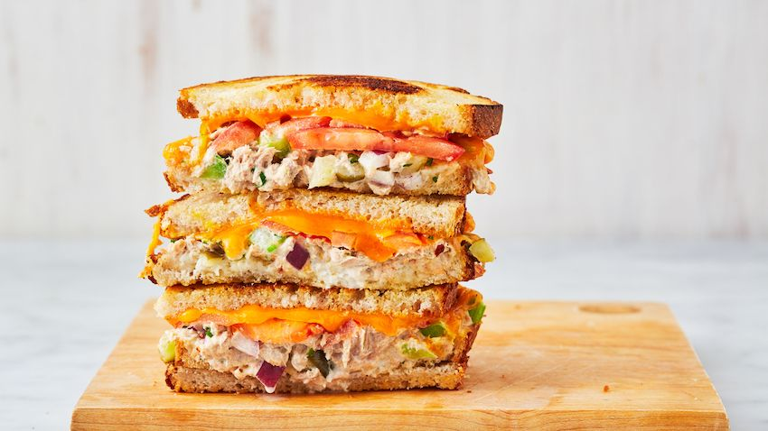

Tuna Melt Recipe

The Tastiest Tuna Melt
Today I will teach you how to make the tastiest tuna melt you have ever put in your mouth.
Indgredients
- 2 cans of tuna
- 1 tablespoon of butter
- 2 slices of bread
- 1/2 cup of mayo
- 1 tablespoon of lemon juice
- 1 tablespoon of sweet relish
- 1 stalk of celery
- 1 teaspoon of garlic powder
- 1 slice of tomato
- 1/2 cup of mozarella cheese
- 1/4 onion sliced finely
- Kosher salt
- Pepper
Directions
- Preheat pan to medium heat
- Start by draining the tuna and placing in a large bowl
- Slice 1 stalk of celery into small pieces
- Chop 1/4 cup of onion
- Add celery, onion, lemon juice, sweet relish and garlic powder to bowl
- Place a lid on and toss the contents vigorously
- Add kosher salt and pepper
- Lather 1 side of 2 pieces of bread with butter
- Place bread into pan butter side face down
- Add tuna to bread
- Add mozarella to tuna and then place the second piece of bread on top with the buttered side facing up
- After 1 minute or when golden brown flip
- When the last side is golden brown, take off heat and add a slice of tomato
- Enjoy your amazing and healthy tuna sandwich!